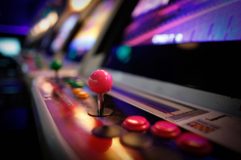
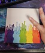

Original Image
Original Image in .jpg Format | Original Image as a GIF | Original Image in Greyscale | Original Image in Black and White
The purpose of this page is to compare and contrast the differences in photos when they are manipulated in different ways, as well as when different file types are used.
This photo was taken by Dan Butler, a photographer who posts a wide array of photos: Objects, buildings, boudoir, landscapes, whatever seems to catch his eye. The photo focuses on an arcade machine, with the buttons of said arcade machine focused while everything else is blurred. I picked this because I love the aesthetic of arcades and thought that this was a really pretty picture of one. It's a ".jpg" image with a 3:2 aspect ratio and dimensions of 5616 x 3744. It takes 1.05MB of storage.
Original Image in .jpg Format | Original Image as a GIF | Original Image in Greyscale | Original Image in Black and White

This photo was taken by me, Bella! I picked it because it was the nearest square object I have and I thought it'd still work well with the overall theme of my website. The image is of a square-shaped case with rainbow liquid printed on its front, with my hand holding a peace-sign pose next to it. It's a ".jpg" image with an aspect ratio of almost 6:7 and dimensions of 2981 x 3492 pixels. It takes 2.99MB of space.
Original Image in .jpg Format | Original Image as a GIF | Original Image in Greyscale | Original Image in Black and White
